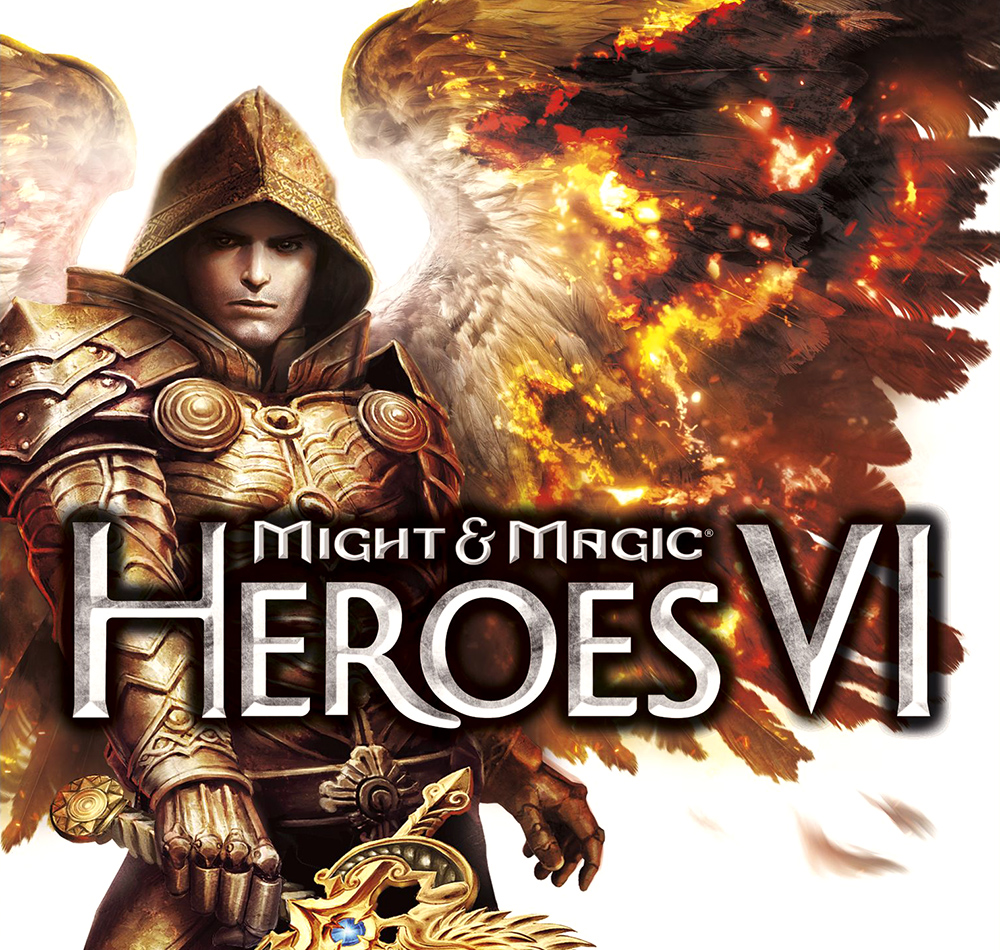

Действие Might and Magic Heroes VI начинается 400 лет назад относительно Might and Magic V, представляя историю Архангела, возвращающегося к жизни как раз перед началом демонического вторжения. Будучи членом династии герцогов Гриффин, игрок должен остановить войну. В игре реализовано разветвление возможных течений сюжета. Наличествует встроенная система, позволяющая постить «контент» прямо в сообщество Might Magic Heroes VI. Ubisoft называет Heroes VI «ремастерингом» серии. Наряду с такими традиционными элементами Heroes of Might and Magic, как пошаговые сражения/передвижения, наем и повышение уровня войск, представлены новая система репутации и возможность преобразования городов. Игровой процесс содержит примерно равное количество традиционных и инновационных особенностей, включая навыки, способности, заклинания, список героев, юнитов и зданий. Так, магической гильдии в шестых «Героях Меча и Магии» нет, а вместо нее имеется колесообразный левелинг навыков/способностей героя. Новые заклинания можно учить только в определенных зданиях, расположенных за городом. Наконец, в игре снижено количество собираемых ресурсов – вместо классических 7-ми их только 4: золото, дерево, руда и голубые/синие кристаллы. Реализован мультиплеер.